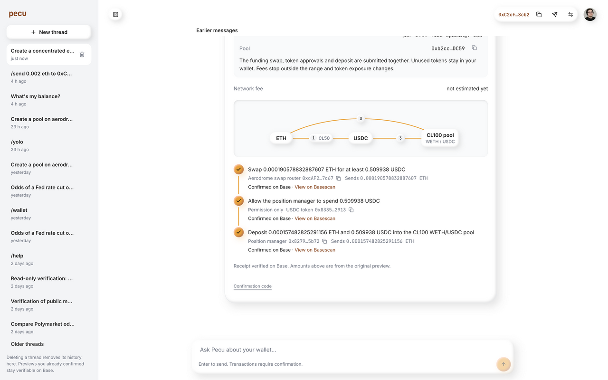

Pecu latency, second pass
Median preview time fell from 16.14 s to 11.70 s, a 27.5% reduction. Five requests before and five after, using the exact original prompt in the same authenticated thread.
| Measurement | Before | Final |
|---|
| Median | 16.14 s | 11.70 s |
| Maximum / sample p95 | 35.59 s | 14.43 s |
| Successful previews | 5 / 5 | 5 / 5 |
Authenticated browser API stream completion, including network delivery. This is not UI paint time. Sequential samples are not a randomized experiment. Five observations do not establish a production p95. Cache conditions are recorded in traces; the final first request includes edge misses served from R2.
Prompt: “Create a concentrated eth usdc pool on aerodrome with half of my eth!” Benchmark previews were cancelled and verified before the next request. No benchmark transaction moved funds.
What shipped
- Background refresh and coordinated misses for the full token catalog, pool index and swap topology. Production refreshes included 35,257 tokens and 37,476 pools.
- One typed liquidity operation resolves the pair, compares up to eight funded pools by current TVL, reads current balances and prepares the batch. Independent pool reads run four at a time.
- Pool offsets are checked in a bounded neighborhood because newly added pools can shift catalog order. The SDK independently verifies the address. Larger changes retain its full-scan fallback.
- Wallet and signer initialization are shared within a turn. No cross-turn balance or quote caching.
- Each edge/R2 operation has a 1.5-second deadline. A storage miss or timeout falls through to the coordinated catalog source. Only native ETH and wrapped ETH retain chain aliases; other symbols use the full catalog.
- Structured cache, refresh and RPC timing logs correlate with the existing model/tool timeline and PostHog trace. The benchmark script preserves outcomes and reports all samples.
What the replay caught
The first deployed batch still followed the older two-call sequence in some conversation turns. The turn wrapper requested a separate balance read despite the planner already doing it. That instruction is corrected.
The next batch exposed shifting catalog offsets and unnecessary full scans. After fixing that, four requests took 9.21–10.80 seconds, while one took 149.82 seconds. Cloudflare isolated 120.123 seconds inside an R2 swap-topology read. That incident led to the cache deadline fix. All intermediate data remains linked below.
On-chain verification
The separate execution replay succeeded on Base. Position NFT 77027019 belongs to the Pecu wallet and has positive liquidity. View the transaction.
Wallet after execution: 0.000348107746868867 ETH. Independent receipt, owner and position reads.

Validation and limits
521 tests pass, including Workerd integration and cache-stall regressions. Type checks, lint, Worker builds and the public docs build pass. Changes are pushed to main at 0c786a3a. Main Worker version 9ca9db97-6355-4ae5-b588-ebcb3c6ce014; Aero version 2548acc1-5fe0-436b-b1a4-7add1b331a8f.
Pecu web and X Chat share these backend changes on ChatGPT and OpenRouter. This live replay used the current web provider; it does not prove every provider or channel E2E. BeeGreat mobile, Android, CLI and iMessage use separate agent paths. No Sugar/EVM SDK source changed. Normal confirmation and transaction verification remain enabled.
Jev continues to route by its existing confidence threshold. The production traces did not justify enabling direct transaction extraction. Remaining latency includes model/provider variance, current quote RPCs, signing and chain confirmation. A fully empty catalog still needs an initial refresh. This is faster, but not instant.
Every final sample
| Sample | Before | Final |
|---|
| 1 | 35.59 s | 14.43 s |
| 2 | 16.14 s | 11.70 s |
| 3 | 13.56 s | 12.76 s |
| 4 | 14.50 s | 11.13 s |
| 5 | 27.50 s | 8.63 s |
Before data · Final data · Initial deployment · Offset regression · R2 stall · Refresh logs · Bounded lookup trace · PostHog timings